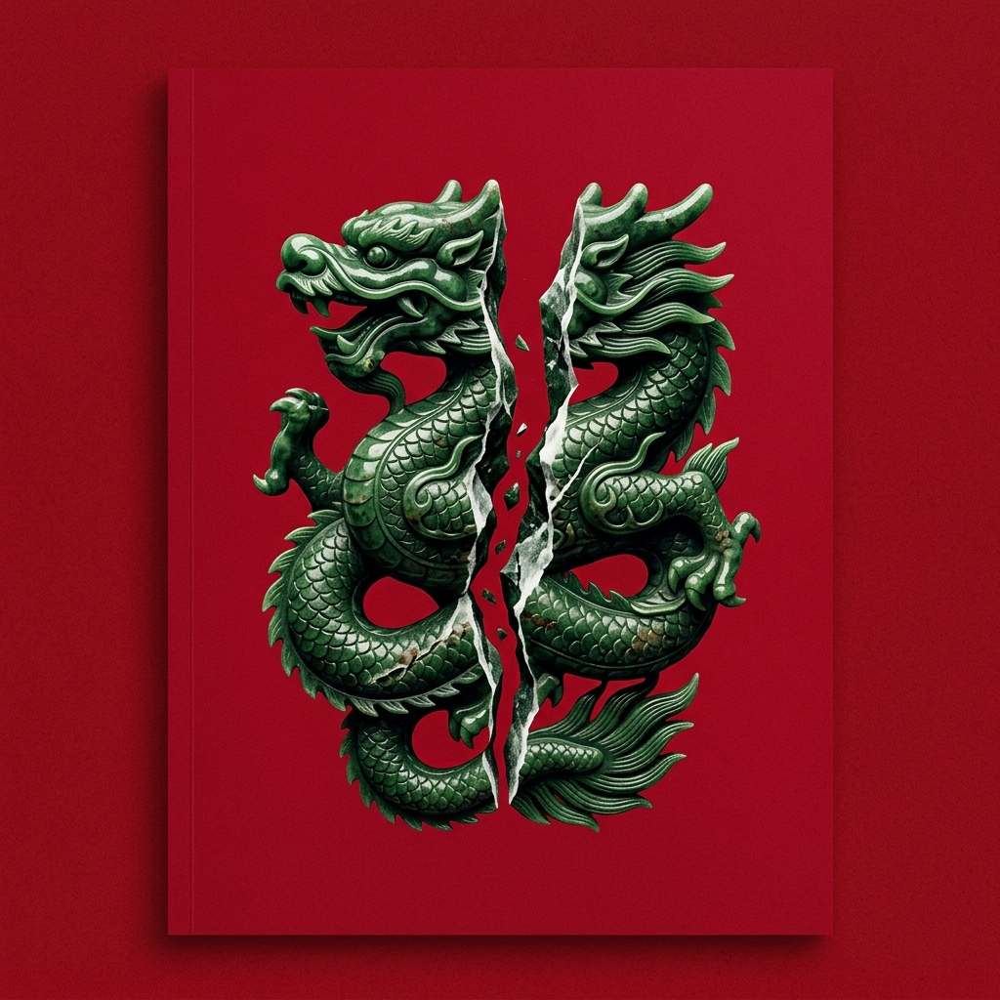
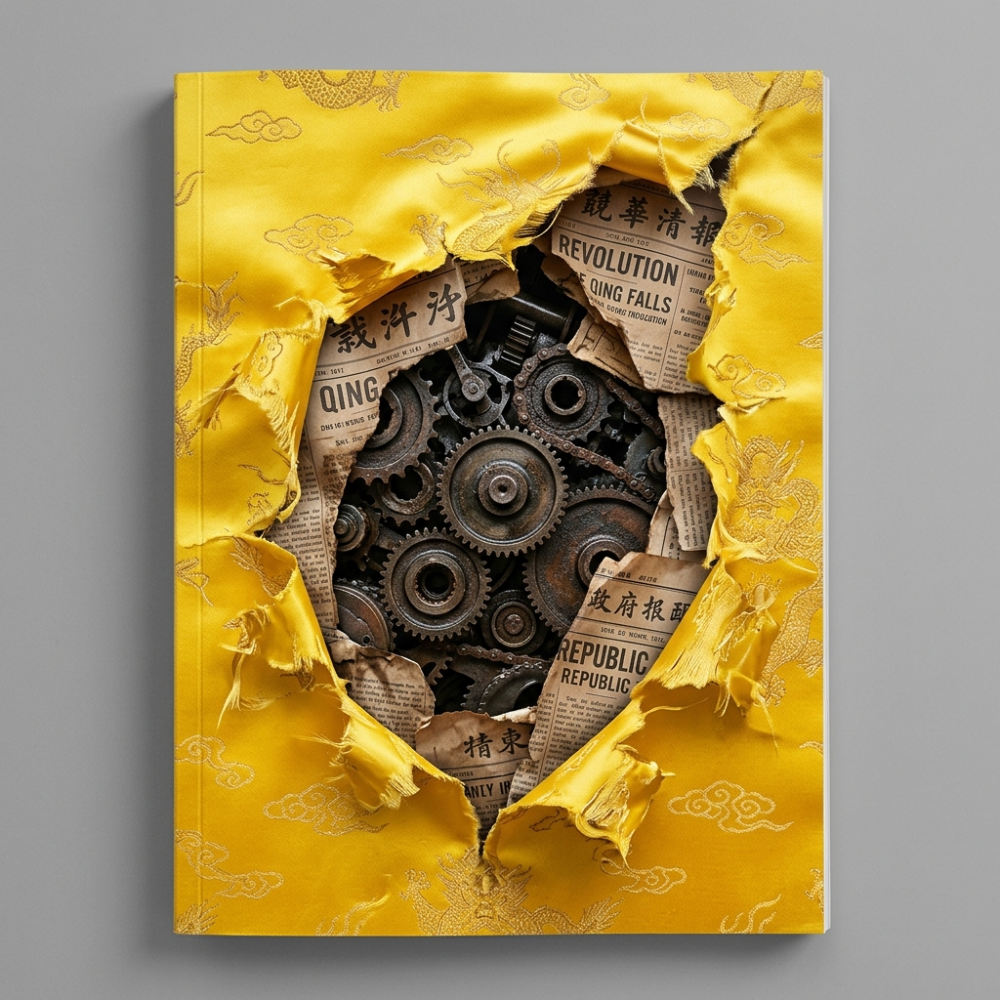

Three finalist images × 2–3 layout variations each. All with corrected date (Spring 2026), no student count, and professional magazine typography.
The deep crimson background provides excellent contrast for white/gold text. The symmetry of the dragon lends itself to centered compositions.

The bright yellow demands dark or high-contrast text. I've removed the grey border — the silk now bleeds edge-to-edge. A heavy vignette or dark header bar ensures readability.

The dark, moody photograph naturally supports white text. The reds of the doors complement a crimson accent color. The arch creates a natural frame.